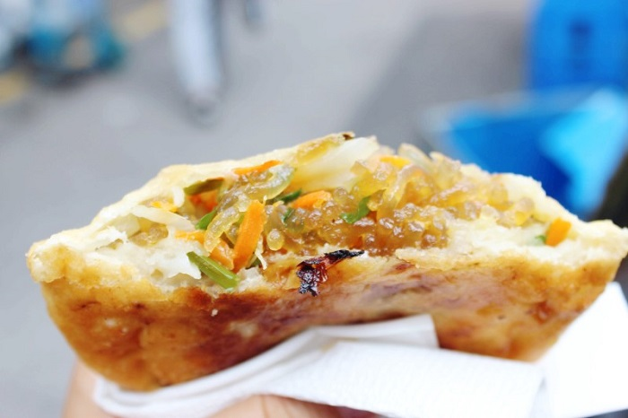

Du lịch Hàn Quốc
Welcome to Korea
Welcome to Korea


Samcheong-dong nằm trên con đường nối từ Cung điện Gyeongbokgung đến Insa-dong. Đây là một trong những địa điểm vô cùng “hot” của thủ đô Seoul xinh đẹp với dáng vẻ cổ kính. Tại con phố yên bình này, có một nhà hàng mang tên Samcheong-dong Hotteok mang một không gian ấm áp và bình dị. Nơi đây luôn thu hút rất đông thực khách địa phương.
Ngoài hotteok mật ong truyền thống, thực khách thỏa sức lựa chọn các loại bánh khác nhau như rau củ, đậu đỏ, thịt,… theo sở thích của mình. Hotteok rau củ tại đây được bán rất chạy. Theo kinh nghiệm khám phá địa điểm ăn uống Hàn Quốc, nếu bạn kết hợp hotteok rau cùng với nước tương pha sẵn sẽ rất tuyệt đấy.
Có rất nhiều nhà hàng ở Gangneung. Một nhà hàng hotteok nằm ở chợ Gangneung là nơi lý tưởng để thưởng thức đồ ăn nhẹ hoặc món tráng miệng. Nollal Hotteok Gunmandu chính là lựa chọn hoàn hảo khi du khách đang băn khoăn trong việc tìm kiếm địa điểm bán hotteok ngon ở Hàn Quốc. Đến quán này, bạn nhất định phải thử hai thực đơn. Đó là hotteok kem và hotteok phô mai mozzarella. Bên cạnh đó cũng có nhiều món hotteok khác. Hotteok kem là món ăn độc đáo tại quán mà không đâu có được. Kết hợp với socola thì còn tuyệt vời hơn. Nghe có vẻ lạ và khiến bạn ngạc nhiên phải không? Vậy thì còn chần chừ gì nữa mà không truy lùng ngay trong hành trình khám phá ẩm thực xứ kim chi nhỉ?
Nhà hàng Jungdong hotteok tại Gunsan được nhiều người biết đến sau khi xuất hiện trên chương trình Infinite Challenge – một chương trình truyền hình thực tế của Hàn Quốc. Nếu đến đây thưởng thức món bánh hotteok, đảm bảo rằng bạn sẽ bị “nghiện” ngay lập tức. Đó là một quán ăn với không gian bếp mở, sạch sẽ cùng nội thất trang nhã. Vì vậy, vấn đề vệ sinh luôn được đảm bảo và chắc chắn thực khách không cần lo lắng. Những chiếc bánh chứa đầy siro tưởng chừng rất ngọt. Nhưng không, chúng lại mang vị mặn đậm đà hơn. Nhân bánh đầy đặn, không có dầu mỡ và khá dễ ăn khiến bất cứ một vị khách khó tính nào cũng phải “xiêu lòng”. Hơn nữa giá cả cũng vô cùng hợp lý.
Khi nhắc tới địa điểm bán hotteok ngon ở Hàn Quốc, nổi tiếng nhất tại Daejeon mà bỏ qua Byeolnanho tteok&Oden thì quả là một thiếu sót. Byeolnanho tteok&Oden nằm trên khu phố mua sắm của bến xe bus liên tỉnh Yuseong. Vì vậy nhà hàng là địa điểm nổi bật, thu hút đông đảo dân công sở và học sinh ghé tới. Tuy nhiên không gian nơi đây khá hẹp.
Theo kinh nghiệm du lịch Hàn Quốc, việc mua đóng gói mang về là một giải pháp hữu hiệu nhất cho bạn. Bên cạnh thực đơn chính là món hotteok phô mai Mozzarella thì món oden (chả cá hầm) cũng rất ngon. Vì hai chủ quán ở đây đều là người khiếm thính nên bạn hãy nói từ từ nhé.
Không chỉ được biết là một trong những nhà hàng hotteok nổi tiếng ở Hàn Quốc đang phát triển ở Seomyeon – thành phố Busan, đây còn là nhà hàng bia ngon nhất. Cái tên Homaek là tên viết tắt của hotteok và maekju (bia) trong tiếng Hàn. Nhà hàng Homaek hứa hẹn đem tới cho thực khách những món bánh hotteok vô cùng sáng tạo, hấp dẫn, được biến tấu từ đôi bàn tay khéo léo của người đầu bếp. Tọa lạc tại phố Café Jeonpo-dong, Homaek mang một không khí tuyệt vời và sôi động. Hotteok được nướng trong lò mà không cần rán nên rất thơm và không hề ngấy. Ăn kèm với salad, uống với chút bia cũng khá ngon và thú vị. Mặc dù giá của món hotteok tại đây hơi đắt nhưng bạn có thể tận hưởng ẩm thực Hàn Quốc một cách trọn vẹn nhất.
GỢI Ý TOUR DU LỊCH HÀN QUỐC |
|---|
>> Du Lịch Hàn Quốc: Hà Nội – Seoul – Lotte World – Trượt Tuyết Jangjipine 5 Ngày Trượt Tuyết Bay Jeju Air chỉ với 12.500.000 đồng
|
Du khách đừng bỏ lỡ 5 nhà hàng bán hotteok ngon ở Hàn Quốc kể trên trong hành trình trải nghiệm mùa đông sắp tới nhé. Thường xuyên theo dõi tin tức du lịch Hàn Quốc rồi lựa chọn cho mình một quán ăn thích hợp nào!
Top 20 điểm tham quan nhất định phải ghé thăm trong hành trình chinh phục Seoul

Điện thoại: 0903357616
Email: thaontps24690@fpt.edu.vn